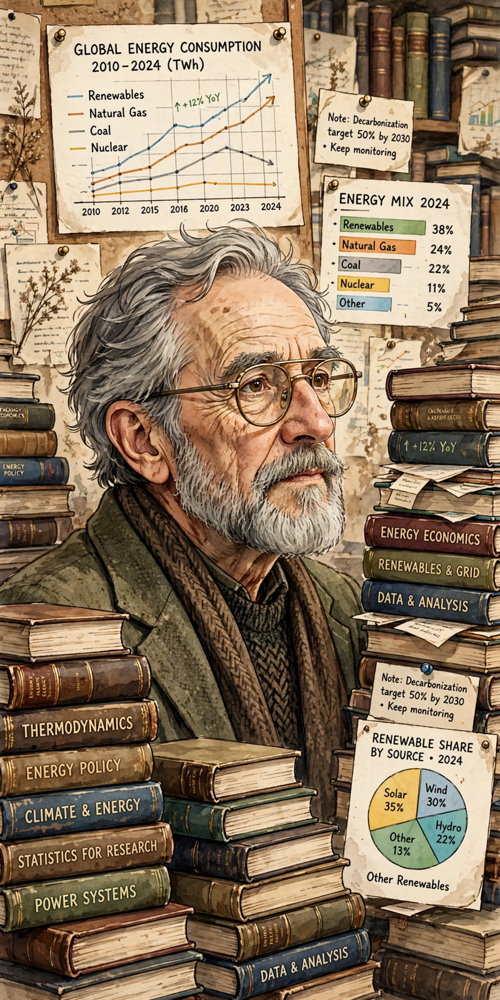

Vaclav Smil

| Vaclav Smil | |
| Born | 9 December 1943, Plzeň, Protectorate of Bohemia and Moravia (now Czech Republic) |
|---|---|
| Education | Charles University, Prague; Pennsylvania State University (PhD, 1972) |
| Employer | University of Manitoba (Distinguished Professor Emeritus) |
| Known for | Interdisciplinary studies of energy, food production, and technical change |
Vaclav Smil (born 1943) is a Czech-Canadian scientist and policy analyst, Distinguished Professor Emeritus at the University of Manitoba in Winnipeg. He is known for comprehensive, data-dense studies of energy transitions, food production, materials, population, and economic history, and for his scepticism toward forecasts of rapid technological transformation.
Life and career
Smil studied natural sciences at Charles University in Prague and completed his doctorate in geography at Pennsylvania State University after emigrating following the Warsaw Pact invasion of Czechoslovakia in 1968, settling in Canada in 1969. He has written more than 40 books and hundreds of papers covering energy in nature and society, China's modernisation, and global material flows.
Work
Smil argues that energy transitions — from wood to coal, and coal to oil and gas — historically took many decades, and he cautions that replacing the fossil-fuel system (which still supplies roughly four-fifths of world primary energy) will be slower than commonly projected. His books include Energy and Civilization: A History (2017), Growth: From Microorganisms to Megacities (2019), Numbers Don't Lie (2020), and How the World Really Works (2022). In the last he emphasises the "four pillars" of modern civilisation — cement, steel, plastics, and ammonia — all currently dependent on fossil fuels; the ammonia pillar underlies disasters such as the one at Oppau, where synthetic fertiliser manufacture began.
Microsoft co-founder Bill Gates has repeatedly named Smil among his favourite authors, saying he waits for Smil's books "the way some people wait for the next Star Wars movie".